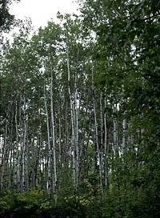

Trees, like all other living things, eventually grow old and die.
For some trees, death may come as suddenly as a lightning strike.
High winds might uproot a tree, or an ice storm may coat it and
bend it to the breaking point. For most trees, though, death is
preceded by a period of natural decline. Many trees have
fairly predictable life spans - a Manitoba maple is old
at age 125, while some kinds of birch trees die at age 50. The aspen stand on the left is 70 years old. |
As trees age and weaken, they do not grow as vigorously. Many
trees are prematurely weakened by air and soil pollutants, mechanical
injury to the roots during road or building construction, or lowered
water tables. Trees are also weakened by bark-stripping animals,
such as mice, voles, porcupines, and rabbits. Once trees have
openings in their bark, they are easy prey to insects, fungi,
disease, and other decay organisms.
Over the past 20 years, widespread forest decline has been reported
in Central Europe, Scandinavia, and eastern North America. Forest
decline is not 'species-specific' like insect depredation;
it affects many species within a given forest. Mount Mitchell
in North Carolina has suffered a staggering 80 percent loss of
conifer species at elevations greater than 1500 m. Broad leafed
deciduous species such as sugar maple, beech, and white and yellow
birch are also prone to decline. In Quebec, a serious decline
of sugar maple threatens the multi-million dollar maple syrup
industry. Generally speaking, most declining trees show some form
of crown die back. This die back may be defined as a progressive
loss of leaves and fine branches starting at the outside of the
crown and proceeding inwards. Leaves remaining at the top of the
crown may be undersized and yellow. Stunted roots, premature fall
coloration (often brown) and leaf drop, reduced trunk growth,
and bark peeling off large limbs are also symptoms of decline.

A number of hypotheses have been proposed to explain die back.
Some of these are based on naturally occurring stresses, while
others involve pollutants associated with human activities. There
are two types of naturally occurring stresses that alter the composition
of a forest ecosystem biotic and abiotic. |
Biotic Factors
A biotic stress is the result of the action of a living organism,
such as disease causing fungi (fungal pathogen), insects, or grazing
animals including deer and cattle.
Dwarf mistletoe and spruce budworm are naturally occurring biotic
diseases of Saskatchewan trees. Their effects are cyclic, part
of the natural ecology of the forest. They do not normally contribute
to a decline of a forest ecosystem. Dutch elm disease, on the
other hand, is an introduced fungal disease carried by insects.
Since it is not endemic to North America, the elm tree is very
susceptible to the disease. Elm trees further west are affected
each year as the insect moves the fungus along.
Abiotic Factors
Abiotic stresses involve physical (non-living) factors that are
part of the environment in which the tree grows. Drought, extremes
of heat and cold, and pollution are three abiotic factors that
have been implicated in tree decline.
Forests decline as a result of a number of interacting stresses.
What is concerning scientists now is the rapidity with which entire
forest ecosystems have been affected. Most agree that our forest
ecosystems are suffering from a combination of natural stresses
and air pollution.

|
|


|